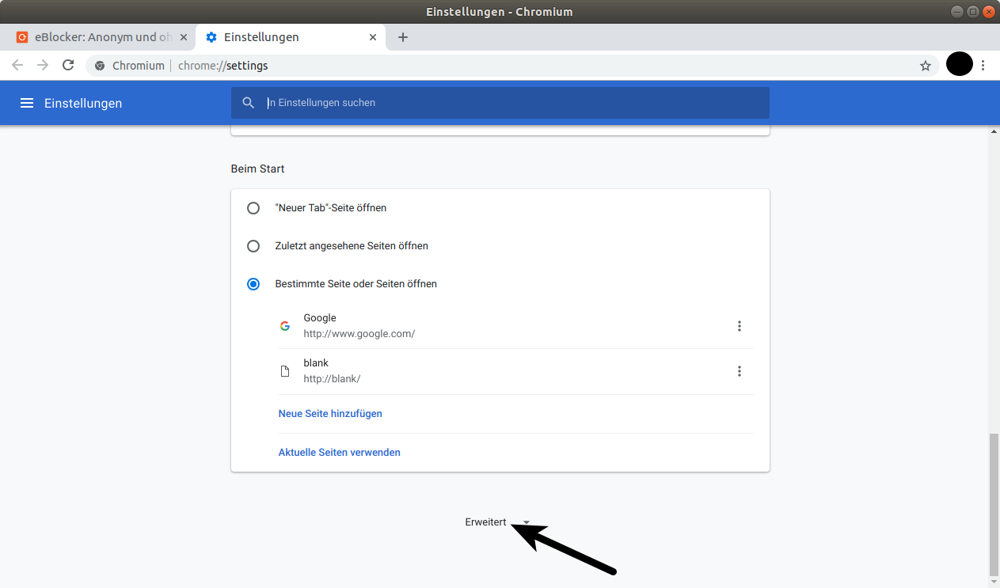
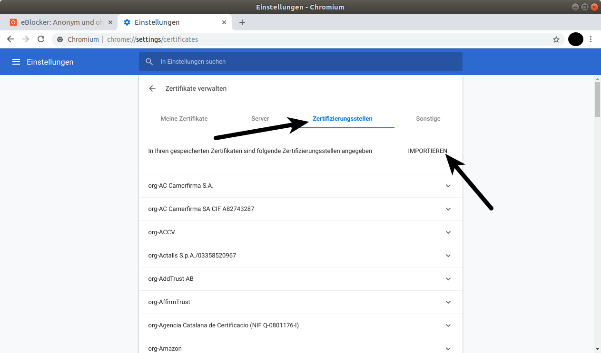

eBlocker Help > FAQs > HTTPS Funktion (SSL/HTTPS)
Linux Benutzer haben meist die Auswahl zwischen dem Firefox Browser und dem Chromium Browser. Der Chromium Browser ist der von Google als quelloffenes Software-Projekt zur Verfügung gestellte Teil seines Webbrowsers Google Chrome.
Linux Benutzer mit dem Firefox Browser, oder einen Browser aus Basis des Firefox Browsers, können das eBlocker Zertifikat ganz einfach hinterlegen. Folgen Sie nur unserer Firefox Browser Anleitung.
Benutzen Sie bitte den Chromium / Chrome Browser, oder einen Browser auf Basis des Chromium Browsers.



Bitte sehen Sie im Anschluss in den eBlocker Einstellungen > Menü HTTPS > Reiter VERTRAUENSWÜRDIGE APPS nach, ob Sie noch weitere Ausnahmen für zum Beispiel Feroda Linux, Ubuntu Linux, OpenSUSE, oder zum Beispiel für Linux Mint aktivieren sollten.